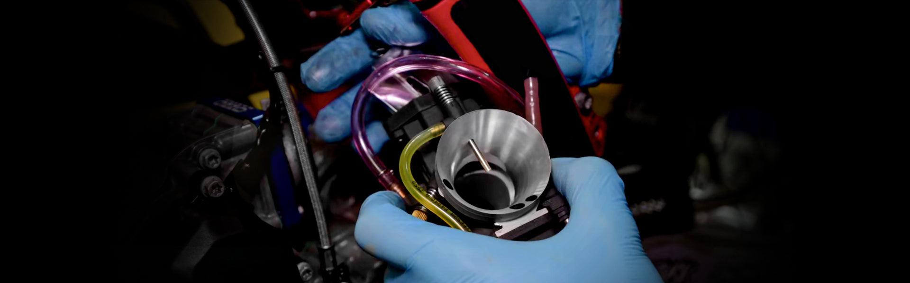
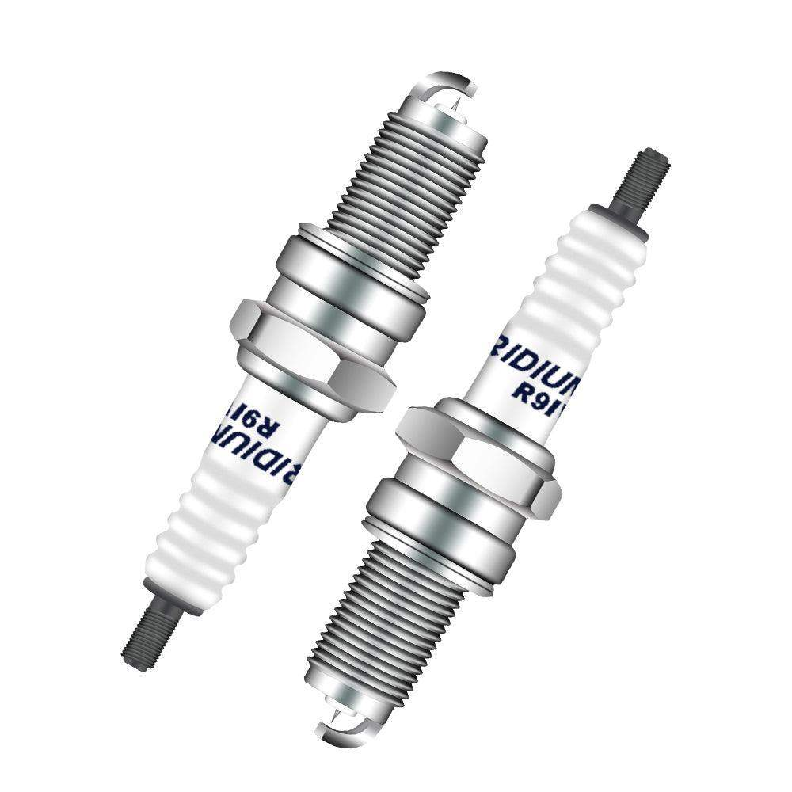
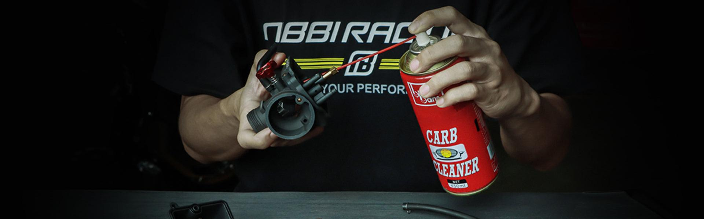
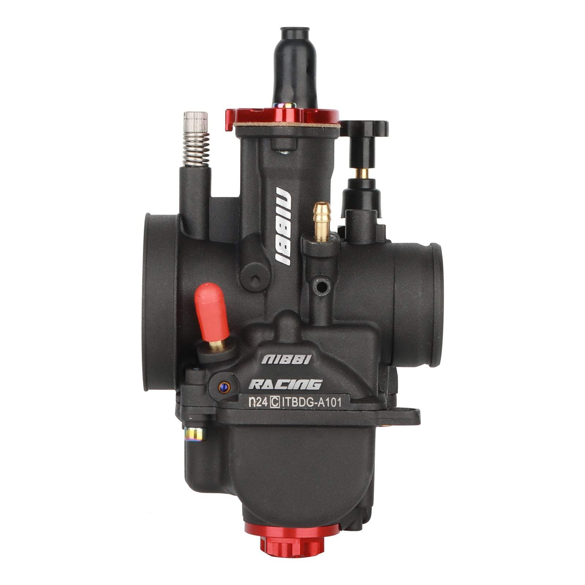
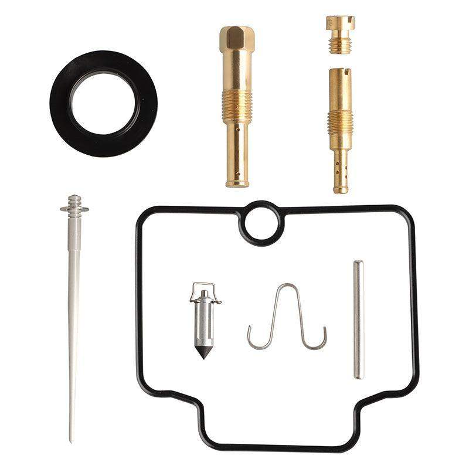
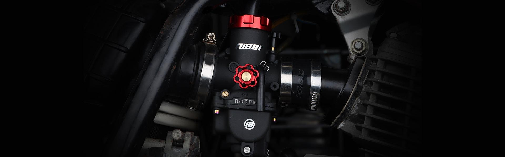

NIBBI KNOWLEDGE BASE
RIDE SMARTER.TUNE WITH CONFIDENCE.
One place for NIBBI setup knowledge, troubleshooting, product education and rider stories — organized around what you need to solve next.
POPULAR:

START HERETHE ESSENTIAL TUNING GUIDEREAD THE GUIDE →
CHOOSE YOUR STARTING POINT
WHAT DO YOU NEED
HELP WITH?
Start with the problem you are solving. We will take you to the most useful group of guides.
BROWSE THE LIBRARY
ONE HUB.
CLEAR PATHS.
Every article belongs to one primary topic, while tags connect related symptoms, carburetors and models without duplicating content.
TRENDING & NEW
WHAT RIDERS ARE
USING NOW.
10 guides shown · Updated as new content is published
FOUNDATION GUIDETuning & jetting9 MIN READ
How to Tune a Motorcycle Carburetor
The complete adjustment sequence for pilot circuit, needle position and main jet.
READ GUIDE →
MOST USEDDiagnostics7 MIN READ
Rich vs. Lean: Symptoms & Jetting Fixes
Read how the bike behaves, isolate the fuel circuit and choose the next test.
READ GUIDE →
Maintenance8 MIN READ
How to Clean a Motorcycle Carburetor
A safe teardown, passage cleaning and reassembly workflow for reliable delivery.
READ GUIDE →
PWK SERIESCarb guides10 MIN READ
NIBBI PWK24 Setup & Jetting Guide
Installation checks, baseline settings and troubleshooting for 2T and 4T applications.
READ GUIDE →
Tuning & jetting6 MIN READ
How to Rejet a Motorcycle Carburetor
Replace pilot and main jets while keeping a controlled record of the original baseline.
READ GUIDE →
Maintenance7 MIN READ
How to Set Carburetor Float Height
Measure float position correctly and diagnose fuel level, overflow and leak symptoms.
READ GUIDE →